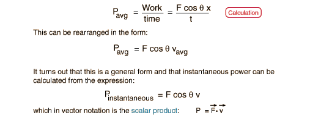
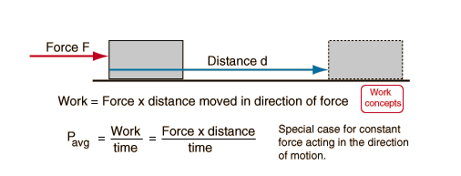

PowerPower may be defined as the rate of doing work or the rate of using energy. These two definitions are equivalent since one unit of energy must be used to do one unit of work. Often it is convenient to calculate the average power. In the straightforward cases where a constant force moves an object at constant velocity, the power is just P = Fv. In a more general case where the velocity is not in the same direction as the force, then the scalar product of force and velocity must be used. The standard unit for power is the watt (abbreviated W) which is a joule per second. |
Index Power concepts | ||
|
Go Back |
Power CalculationThe rate of doing work is equal to the rate of using energy since the a force transfers one unit of energy when it does one unit of work. A horsepower is equal to 550 ft lb/s, and a kilowatt is 1000 watts. 1 hp = 745.8 watts. This calculation is only for cases where the force is in the direction of the velocity, and there are many cases where that is not so. Then for instantaneous power, you just multiply the product of force and velocity by the cosine of the angle between them to get the power. In the more general cases where everything varies, one often calculates the work first and then divides by the time to get the average power.
|
Index Power concepts | ||
|
Go Back |